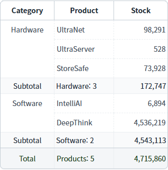
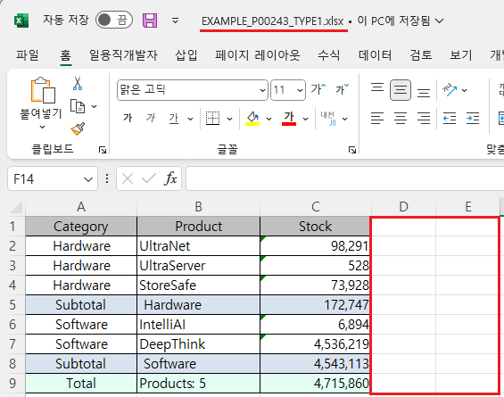
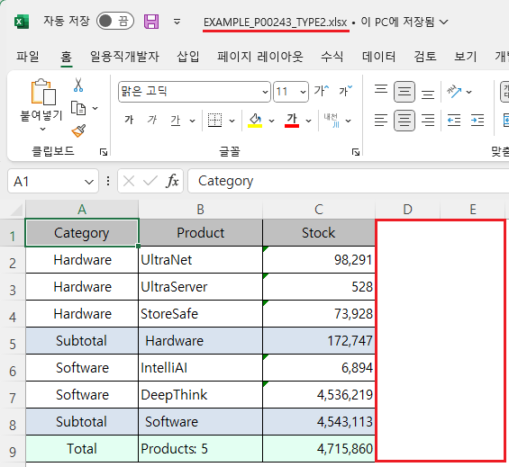

GridView의 'advancedExcelDownload' 메소드를 사용하여, 엑셀 다운로드 시 행 높이와 눈금선을 표시하지 않도록 설정한 예제입니다.
'advancedExcelDownload' 메소드의 첫 번째 인자인 JSON 객체에 설정할 수 있는 공통 스타일 속성은 다음과 같습니다.
rowHeight : [default: 없음] Excel 파일로 다운로드 할 때 엑셀의 셀 높이. (단위: pixel)
displayGridlines : [default: true, false] Excel 파일 전체 셀의 눈금선 제거 유무
엑셀 다운로드 - 기본 동작
엑셀 다운로드 - 공통 스타일 적용
다운로드된 엑셀 파일의 행 높이, 눈금선 유무를 비교합니다.
1
STEP 1: 초기 상태 확인하기
서브토탈(subtotal)과 푸터(footer)가 구성되어 있습니다.
Image 1.브라우저(Chrome) 실행 예시

2
STEP 2: '엑셀 다운로드 - 기본 동작' 버튼을 클릭합니다.
'EXAMPLE_P00243_TYPE1.xlsx' 파일이 다운로드 됩니다.
3
STEP 3: 실행된 결과를 확인합니다.
다운로드 된 'EXAMPLE_P00243_TYPE1.xlsx' 파일을 실행합니다.
눈금선이 표시되고, 행의 높이가 기본 값으로 설정되어 있습니다.
Image 2.다운로드된 엑셀(2021) 파일 예시

1
STEP 1: 초기 상태 확인하기
서브토탈(subtotal)과 푸터(footer)가 구성되어 있습니다.
Image 3.브라우저(Chrome) 실행 예시
2
STEP 2: '엑셀 다운로드 - 공통 스타일 적용' 버튼을 클릭합니다.
'EXAMPLE_P00243_TYPE2.xlsx' 파일이 다운로드 됩니다.
3
STEP 3: 실행된 결과를 확인합니다.
다운로드 된 'EXAMPLE_P00243_TYPE2.xlsx' 파일을 실행합니다.
눈금선이 표시되지 않고, 행의 높이가 '30px'로 설정되어 있습니다.
Image 4.다운로드된 엑셀(2021) 파일 예시

1
'advancedExcelDownload' 메소드를 사용하여 설정합니다.
Example 1.Script
//예제 파일의 스크립트 "scwin.btn_ex2_onclick"를 참고하세요. var jsnOptions = { fileName: "EXAMPLE_P00243_TYPE2.xlsx", //엑셀의 파일명 useSubTotal: "true", //필수 설정 - subTotal 표시 rowHeight: "30", //Excel 파일로 다운로드 할 때 엑셀의 셀 높이. (단위: pixel) displayGridlines: "false" //Excel 파일 전체 셀의 눈금선 제거 유무 }; //GridView "grd_exam1"의 엑셀 다운로드 실행 grd_exam1.advancedExcelDownload(jsnOptions);
advancedExcelDownload( options , infoArr )
options.useSubTotal
options.rowHeight
options.displayGridlines